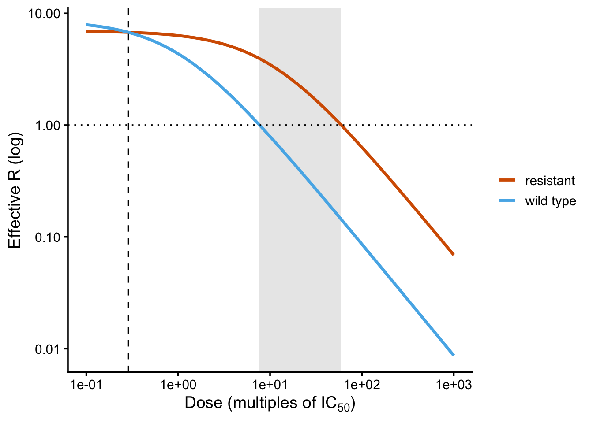
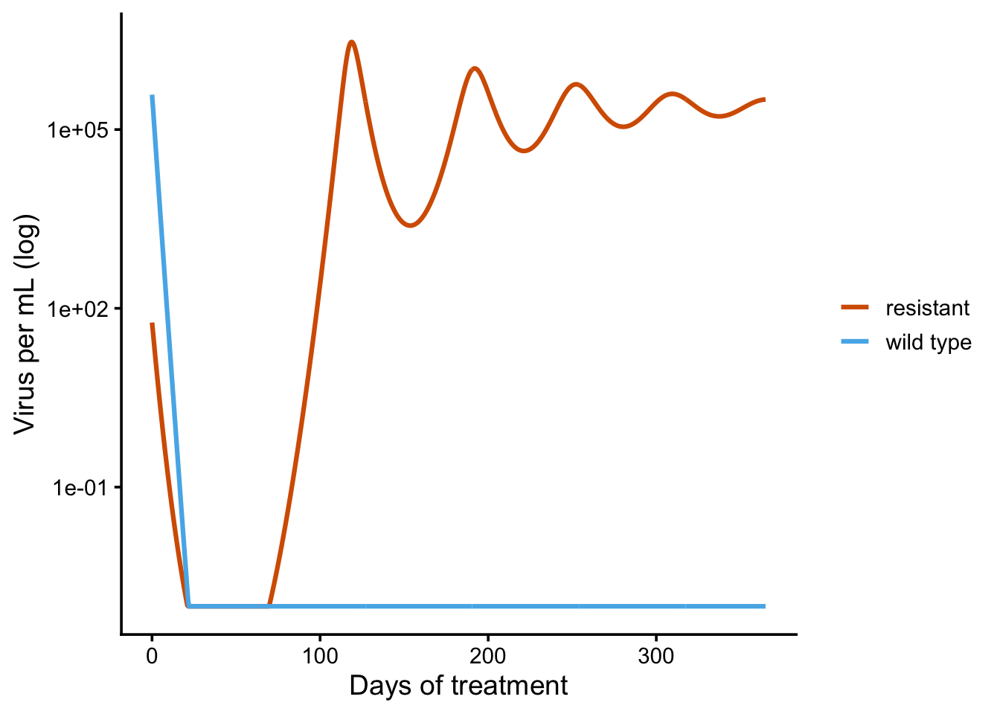
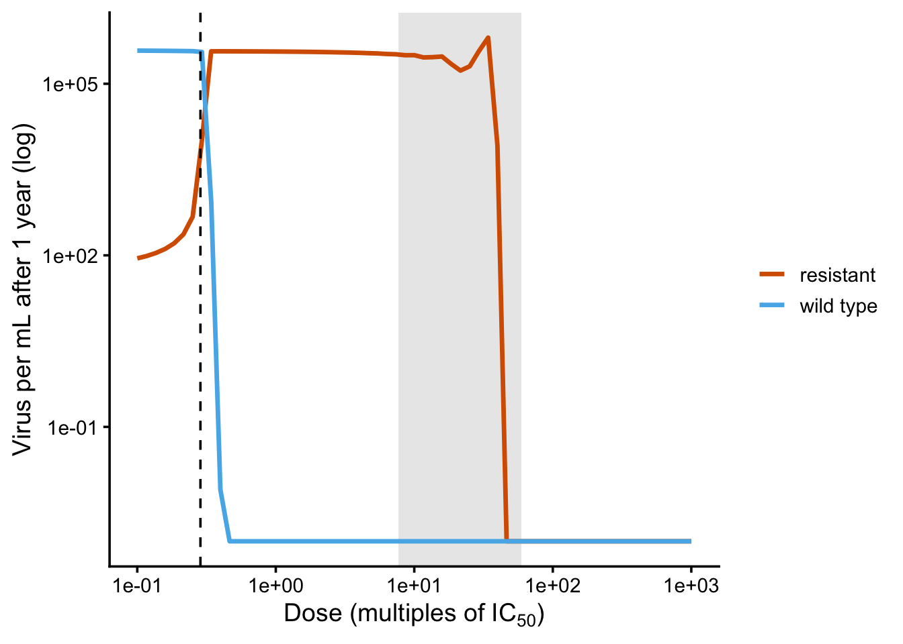

library(deSolve)
library(ggplot2)
library(tidyr)
theme_set(theme_classic(base_size = 14))T4 — Within-host dynamics and drug resistance
Day 2 · pathogen evolution within a host
The question. A patient with a chronic viral infection starts drug treatment. The virus population already contains a few drug-resistant mutants. Which dose suppresses the infection, and which dose selects for resistance instead?
The target-cell model
Inside the host, uninfected target cells \(T\) are infected by free virus \(V\) and become infected cells \(I\). Infected cells produce new virus and die (Perelson 2002, Nat Rev Immunol; Nowak & May 2000):
\[ \frac{dT}{dt} = \lambda - dT - \beta T V, \qquad \frac{dI}{dt} = \beta T V - \delta I, \qquad \frac{dV}{dt} = p I - c V . \]
It has the same structure as SIR: \(T\) plays the role of susceptibles. The within-host basic reproduction number counts the infected cells produced by one infected cell in a fresh host:
\[ R_0 = \frac{\beta\,\lambda\,p}{d\,\delta\,c}. \]
Drug, resistance and mutation
- The drug blocks infection: \(\beta \to (1 - \varepsilon)\beta\), with dose response \(\varepsilon(D) = D/(D + \mathrm{IC}_{50})\).
- The resistant mutant \(M\) pays a fitness cost \(\kappa\), so \(\beta_M = (1 - \kappa)\beta\). It needs a \(\rho\)-fold higher dose for the same effect: \(\varepsilon_M(D) = D/(D + \rho\,\mathrm{IC}_{50})\).
- Each wild-type infection produces a mutant with probability \(u\).
wh <- function(t, x, p) {
with(as.list(c(x, p)), {
eW <- D / (D + IC50)
eM <- D / (D + rho * IC50)
infW <- (1 - eW) * beta * T * VW
infM <- (1 - eM) * (1 - kappa) * beta * T * VM
dT <- lambda - d * T - infW - infM
dIW <- (1 - u) * infW - delta * IW
dIM <- u * infW + infM - delta * IM
dVW <- p * IW - c * VW
dVM <- p * IM - c * VM
list(c(dT, dIW, dIM, dVW, dVM))
})
}
# Illustrative HIV-like values (per mL, per day), in the range reviewed by Perelson (2002)
pars <- c(lambda = 1e4, d = 0.01, beta = 2e-7, delta = 1, p = 1000, c = 23,
kappa = 0.2, rho = 10, u = 3e-5, IC50 = 1, D = 0)
R0 <- with(as.list(pars), beta * lambda * p / (d * delta * c))
R0M <- (1 - pars[["kappa"]]) * R0
c(R0_wildtype = R0, R0_mutant = R0M)R0_wildtype R0_mutant
8.695652 6.956522 First, let the untreated infection settle to its chronic equilibrium. Mutants are already present at a low frequency (mutation–selection balance).
x0 <- c(T = 1e6, IW = 0, IM = 0, VW = 1e-3, VM = 0)
pre <- ode(x0, seq(0, 1000, 1), wh, pars)
eq <- pre[nrow(pre), -1]
signif(eq, 3) T IW IM VW VM
1.15e+05 8.85e+03 1.33e+00 3.85e+05 5.77e+01 Three doses that matter
Under the drug, each strain has an effective reproduction number:
\[ R_W(D) = R_0\,\frac{\mathrm{IC}_{50}}{D + \mathrm{IC}_{50}}, \qquad R_M(D) = (1-\kappa)R_0\,\frac{\rho\,\mathrm{IC}_{50}}{D + \rho\,\mathrm{IC}_{50}} . \]
Setting these equal to 1, or to each other, gives three simple thresholds:
- \(D_x = \dfrac{\rho\kappa}{\rho(1-\kappa) - 1}\,\mathrm{IC}_{50}\). Above this dose the mutant has the larger \(R\), so resistance is favoured. As in T3, the strain with the larger \(R\) wins the competition for target cells.
- \(D_W = (R_0 - 1)\,\mathrm{IC}_{50}\). Above this dose the wild type cannot persist even on its own.
- \(D_M = \rho\big((1-\kappa)R_0 - 1\big)\,\mathrm{IC}_{50}\). Above this dose nothing persists.
Between \(D_W\) and \(D_M\) the drug removes the wild type but not the mutant. This is the classical mutant selection window. The figure shows it is only part of the range where resistance wins.
IC50 <- pars[["IC50"]]; rho <- pars[["rho"]]; kappa <- pars[["kappa"]]
Dx <- rho * kappa / (rho * (1 - kappa) - 1) * IC50
DW <- (R0 - 1) * IC50
DM <- rho * (R0M - 1) * IC50
round(c(D_x = Dx, D_W = DW, D_M = DM), 2) D_x D_W D_M
0.29 7.70 59.57 doses <- 10^seq(-1, 3, length.out = 200)
reff <- rbind(data.frame(dose = doses, R = R0 * IC50 / (doses + IC50), virus = "wild type"),
data.frame(dose = doses, R = R0M * rho * IC50 / (doses + rho * IC50), virus = "resistant"))
ggplot(reff, aes(dose, R, colour = virus)) +
annotate("rect", xmin = DW, xmax = DM, ymin = 0, ymax = Inf, alpha = 0.15) +
geom_line(linewidth = 1.2) +
geom_hline(yintercept = 1, linetype = "dotted") +
geom_vline(xintercept = Dx, linetype = "dashed") +
scale_x_log10() + scale_y_log10() +
scale_colour_manual(values = c(`wild type` = "#56B4E9", resistant = "#D55E00")) +
labs(x = expression("Dose (multiples of " * IC[50] * ")"),
y = "Effective R (log)", colour = NULL)
Simulating treatment
treat <- function(D, days = 365) {
as.data.frame(ode(eq, seq(0, days, 0.5), wh, replace(pars, "D", D)))
}
tc <- treat(D = 20)
long <- pivot_longer(tc[, c("time", "VW", "VM")], -time, names_to = "virus", values_to = "V")
ggplot(long, aes(time, pmax(V, 1e-3), colour = virus)) +
geom_line(linewidth = 1.1) +
scale_y_log10() +
scale_colour_manual(values = c(VW = "#56B4E9", VM = "#D55E00"),
labels = c(VM = "resistant", VW = "wild type")) +
labs(x = "Days of treatment", y = "Virus per mL (log)", colour = NULL)
At its lowest point the resistant virus is at 2.4e-05 virions per mL. Keep that number in mind for the warning box below.
scan <- do.call(rbind, lapply(10^seq(-1, 3, length.out = 61), function(D) {
last <- tail(treat(D), 1)
data.frame(dose = D, virus = c("wild type", "resistant"), V = c(last$VW, last$VM))
}))ggplot(scan, aes(dose, pmax(V, 1e-3), colour = virus)) +
annotate("rect", xmin = DW, xmax = DM, ymin = 0, ymax = Inf, alpha = 0.15) +
geom_line(linewidth = 1.2) +
geom_vline(xintercept = Dx, linetype = "dashed") +
scale_x_log10() + scale_y_log10() +
scale_colour_manual(values = c(`wild type` = "#56B4E9", resistant = "#D55E00")) +
labs(x = expression("Dose (multiples of " * IC[50] * ")"),
y = "Virus per mL after 1 year (log)", colour = NULL)
Where the deterministic model lies
In this ODE the resistant strain is never exactly zero. So whenever resistance is favoured it always rebounds, even from the tiny minimum computed above. A real patient cannot carry a fraction of a virion. Whether resistance actually appears is an evolutionary rescue problem: will a mutant arise and escape stochastic loss before the wild type is gone? Go back to T2.
Exercises
- Set the cost \(\kappa = 0\). What happens to \(D_x\)? Derive it from the formula first.
- Start treatment with no pre-existing mutants (\(I_M = V_M = 0\)). Does resistance still appear in the ODE, and how much later?
- Which parameter moves \(D_M\) the most, and is it something a doctor can control?
Project hooks
- Missed doses and pharmacokinetics \(D(t)\); combination therapy that needs two mutations; a stochastic version of the mutant (branching process); immune response as an extra compartment. See the project menu, family D.